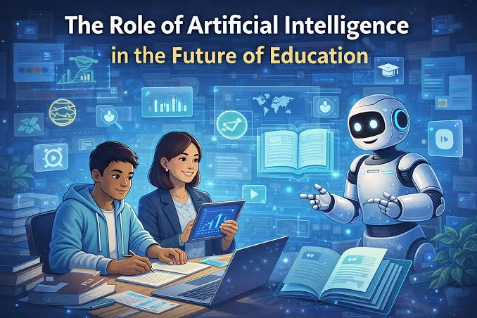

THE NEXT GENERATION
The Future of AI
Explore how artificial intelligence may shape technology, healthcare, education and everyday life.

Understanding the Future of Artificial Intelligence
Artificial intelligence is developing rapidly and may influence how people learn, work, communicate and solve problems.
The future of AI will depend not only on technological progress, but also on how people choose to develop and use it.
What Could the Future Bring?
Smarter Systems
AI systems may become better at understanding information and assisting people.
Smarter assistanceBetter Healthcare
AI may help researchers and healthcare workers analyze information and support medical research.
Health innovationPersonalized Learning
AI tools may provide learning experiences adapted to individual students.
Personal learningNew Opportunities
New technologies may create new types of jobs, services and ways of solving problems.
New possibilitiesPreparing for the Future
Understanding AI and developing digital skills can help people adapt to a rapidly changing technological world.
Keep Learning
Learn about AI, technology and digital skills as they continue to develop.
Be Creative
Use technology to explore ideas, solve problems and create useful things.
Use AI Responsibly
Understand both the benefits and limitations of AI and use it carefully.